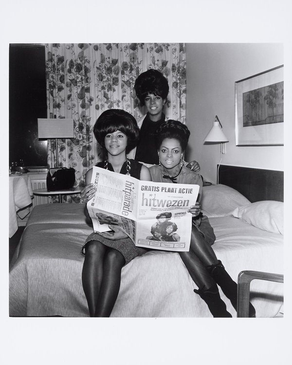

Baby Love by The Supremes is the 1964 single written by Holland-Dozier-Holland.
Motown released it on September 17, 1964.
It spent four weeks at No. 1 in the US and two weeks at No. 1 in the UK.

Table of Contents
The Story Behind Baby Love by The Supremes
A Follow-Up Built to Match
"Where Did Our Love Go" had just made the group stars.
Berry Gordy wanted another chart-topper, so Holland-Dozier-Holland built the next single to sound like it, according to Wikipedia.
The result keeps the stomping beat, the hand claps, the vibraphone shimmer and the constant "baby" in the backing vocals.
Motown released it on September 17, 1964, while its predecessor was still on the charts.
First Love
Lamont Dozier told NME in 1984 that the song was about his first love, a girl he never really got over, as quoted by Songfacts.
Dozier worked out melodies with Brian Holland and lyrics with Eddie Holland.
Eddie Holland then taught the singers the tune once the words were done.
Recording at Hitsville
The Session
The Current dates the recording to August 13, 1964, at Hitsville U.S.A. in Detroit.
Brian Holland and Lamont Dozier produced it.
The single runs 2:34, with "Ask Any Girl" on the B-side.
It also appears on the album Where Did Our Love Go.
The Players
- Earl Van Dyke on piano, Eddie Willis on guitar and James Jamerson on bass.
- Richard "Pistol" Allen on drums and Jack Ashford on vibraphone.
- Henry Cosby and Mike Terry on saxophones, with a teenage Mike Valvano on foot stomps.
How It Charted
In the US
It reached No. 1 on the Billboard Hot 100 in the chart week of October 31, 1964, and stayed four weeks.
That made The Supremes the first Motown act with two US No. 1 singles.
It was the second of five straight chart-toppers for the group, followed by "Come See About Me," "Stop! In the Name of Love" and "Back in My Arms Again."
It also hit No. 1 on the R&B chart and finished 1964 at No. 33 on the Hot 100 year-end list.
In the UK
The record went to No. 1 on the UK Singles Chart for two weeks.
The Rolling Stones' "Little Red Rooster" then took the top spot.
| Measure | Detail | Result |
|---|---|---|
| Billboard Hot 100 | US pop peak, 1964 | No. 1 (4 weeks) |
| Hot R&B | US R&B peak, 1964 | No. 1 |
| UK Singles Chart | UK peak, 1964 | No. 1 (2 weeks) |
| Canada (RPM) | Peak, 1964 | No. 2 |
| Grammy Awards | Best Rhythm & Blues Recording, 1965 | Nominated |
| Rolling Stone | 500 Greatest Songs of All Time | No. 324 (original), No. 499 (2021) |
Cash Box called it "a heartfelt, steady beat thumper" on October 3, 1964.
The US single went Gold, and the UK single has since gone Platinum.
The Lawsuit
In 1966, a musician named Lorenzo Pack sued Motown.
He claimed the writers had based the song on his 1962 record "I'm Afraid."
Songfacts reports that he had little evidence and that Motown won.
Brian Holland testified: "When we write a song, we try to express real feelings about a real situation."
Legacy and Covers
On Screen and in Covers
The song plays in the 1975 film Cooley High and in Quentin Tarantino's Jackie Brown (1997).
Honey Bane took a cover to No. 58 in the UK in 1981.
Where It Fits
It sits at the heart of the Motown boom in 1964.
You can find it on our list of the best 60s songs.
The full story of the trio is in our Supremes biography, and the label's wider sound is covered in the Motown, Soul & R&B hub.
Its successor is told in our Stop! In the Name of Love story.
FAQ
Who wrote Baby Love?
Holland-Dozier-Holland wrote it: Brian Holland, Lamont Dozier and Eddie Holland.
Brian Holland and Lamont Dozier produced it.
When did Baby Love come out?
Motown released it on September 17, 1964.
It appears on the album Where Did Our Love Go, and its B-side is "Ask Any Girl."
Did Baby Love hit No. 1?
Yes, it spent four weeks at No. 1 on the Billboard Hot 100 in fall 1964.
It also topped the UK Singles Chart for two weeks until The Rolling Stones' "Little Red Rooster" replaced it.
Who played on Baby Love?
The Funk Brothers played the track: Earl Van Dyke on piano, Eddie Willis on guitar, James Jamerson on bass, Richard "Pistol" Allen on drums and Jack Ashford on vibraphone.
Diana Ross sang lead, with Florence Ballard and Mary Wilson on backing vocals.
Did Baby Love win a Grammy?
No, it was nominated for Best Rhythm & Blues Recording at the 1965 Grammy Awards.
It lost to Nancy Wilson's "How Glad I Am."
Few sequels match the original this well.
Wikipedia's entry on the song covers its history and charts in more depth.
Press play above and hear why Baby Love by The Supremes still sounds like a sure thing.